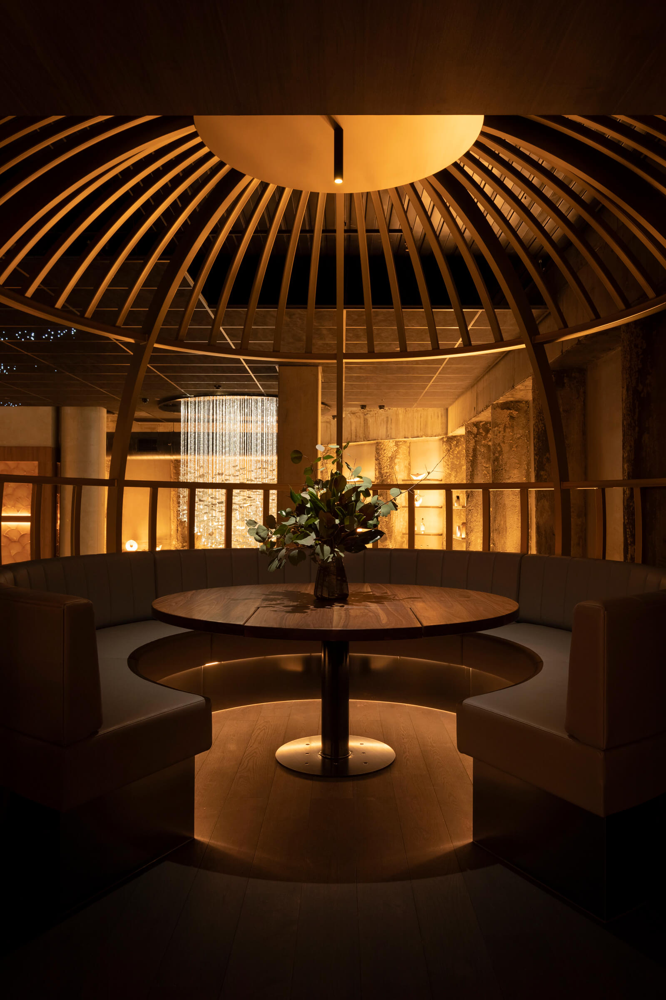

{% assign current_page = 'music' %}
{% assign page_title = 'Music' %}
{% assign pageUrl = page.path | split: "/" %}

{% include head.html %}

{% include nav.html %}

<main class="min-h-screen flex flex-col sm:flex-row">
  <div class="w-full sm:w-55per max-h-screen mb-12 image-section">
    
  </div>
  
  <div class="w-full sm:w-45per sm:min-h-screen max-h-auto sm:max-h-screen sm:overflow-y-scroll">
    <div class="min-h-full flex flex-col justify-center px-16 sm:px-40 pb-20 sm:py-20">
      <div class="section animate__animated animate__fadeInRight">
        <h2 class="title mb-8 animate__animated animate__fadeInRight animate-delay-100">Philosophy</h2>
        <div class="text">
          <p class="animate__animated animate__fadeInRight animate-delay-200">
            At Yugen, you don’t need to think about where to continue the party after dinner, because you’re already here.
            The space between the buzz of dinner and the lights turning on at a bar is filled with seasonal cocktails and
            live DJs. The less you have to think about having fun, the more fun there is to be had.
          </p>
          <p class="mt-8 animate__animated animate__fadeInRight animate-delay-300">
            Live DJ <br>
            Wednesday, Thursday & sunday <br>
            6:30pm - 0:00am
          </p>
          <p class="mt-8 animate__animated animate__fadeInRight animate-delay-400">
            Friday & Saturday <br>
            6:30pm - 2:00AM
          </p>
        </div>
      </div>
    </div>
  </div>
</main>

{% include footer.html %}

